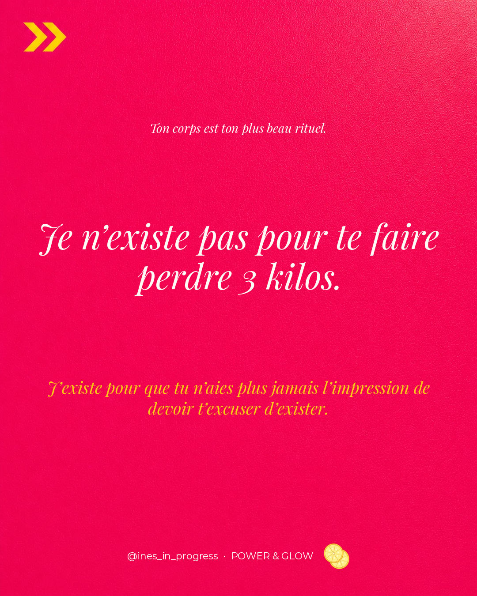
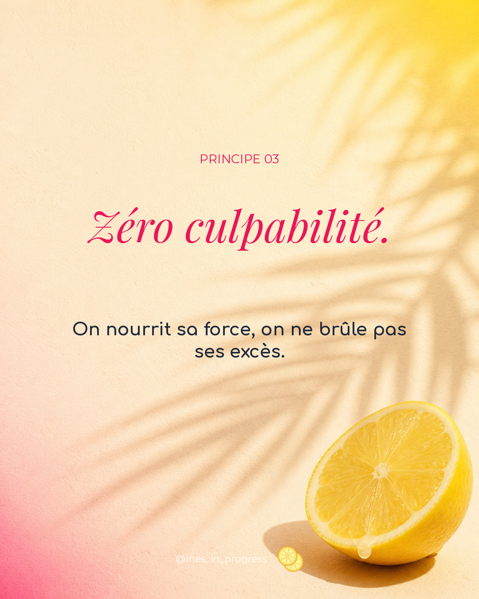
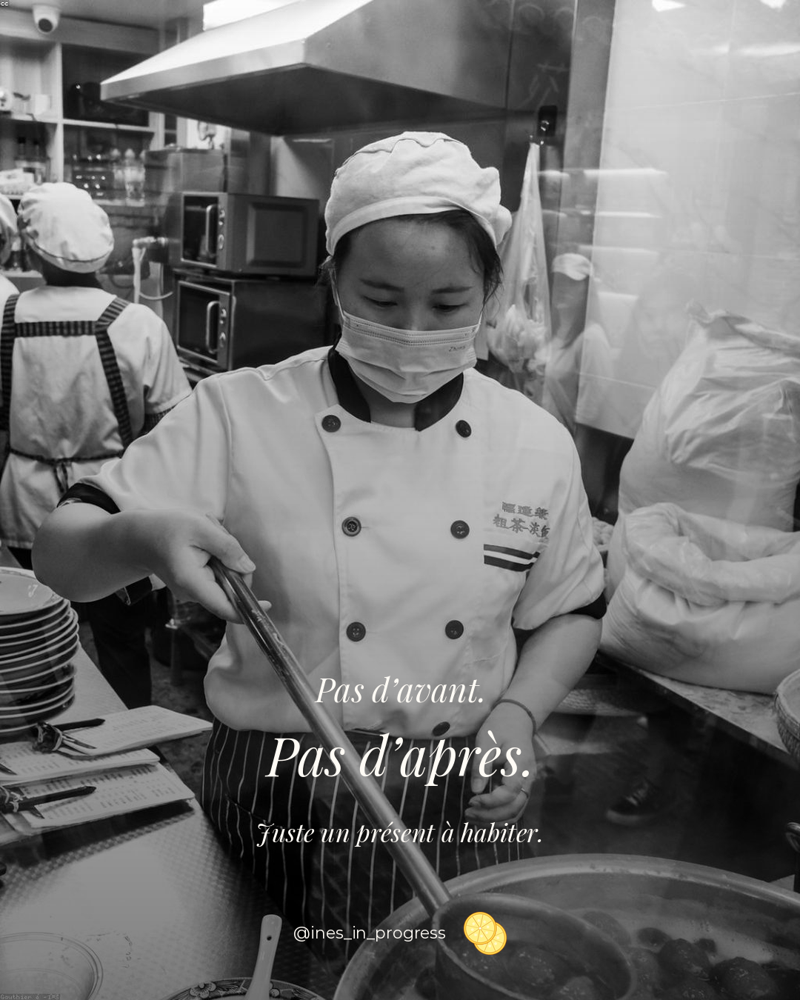

Nous ne skippons pas le soin.
La récupération est aussi sacrée que l'effort.
Le sommeil, l'étirement, la respiration, la pause. Non négociables. On ne progresse pas en s'épuisant — on progresse en s'écoutant.
01
Pas une promesse minceur. Pas un projet à terminer.
Juste un présent à habiter — avec force, douceur, et glow.

Je ne suis pas ta coach minceur. Je suis ta partenaire de glow.
Tout ce que ce projet n'est pas. Lis la liste avant de me suivre.
J'existe pour que tu n'aies plus jamais l'impression de devoir t'excuser d'exister.
Pas de calorie qui se rachète, pas de pizza qui se brûle. La grammaire diététique reste à la porte.
Ton corps n'est pas un brouillon à corriger ni un avant à transformer en après. C'est un présent à habiter.
Mieux vaut un rituel doux, tenu trois fois par semaine, qu'un plan irréprochable abandonné le mardi.
Ton corps n'est pas un champ de bataille. C'est un foyer.
— Manifeste POWER & GLOWCe qui tient, ce qui guide, ce qui revient à chaque séance.
La récupération est aussi sacrée que l'effort.
Le sommeil, l'étirement, la respiration, la pause. Non négociables. On ne progresse pas en s'épuisant — on progresse en s'écoutant.
01La joie est une méthode, pas un bonus.
Taylor Swift à fond, squats qui rient, célébration des micro-victoires. Si ça ne procure aucun plaisir, c'est que la consigne est mal écrite.
02On nourrit sa force, on ne brûle pas ses excès.
Plus jamais cette grammaire diététique qui transforme un dimanche en pénitence. La nourriture n'est ni morale, ni dette. Elle est carburant et plaisir.
03Pas un privilège, pas une récompense — un droit.
Chaque femme mérite la version glowy d'elle-même : reposée, ancrée, fière de son reflet. Sans condition de poids, d'âge, de planning ou d'humeur.
04Ton corps est ton plus beau rituel.
Pas un programme à finir. Un présent à habiter, encore et encore.
La récupération comme acte sacré.
Sommeil, étirement, respiration, hydratation. Le soin n'est pas un bonus en fin de séance — c'est la moitié du travail. On apprend à se reposer comme on apprend à pousser.
Le mouvement comme célébration.
Pas de punition, pas de "je dois". On danse, on rit, on se challenge avec joie. Si l'exercice n'a pas de saveur, on change l'exercice — pas la coach.
La constance plutôt que la perfection.
Trois rendez-vous par semaine, posés comme on pose un café du matin. Pas un défi à terminer — un cadre qui revient, doux, fiable, qui te tient sans te tirer.
Quelques mots qu'on emploie ici différemment d'ailleurs.
Renforcer, sculpter, ancrer. L'opposé de "perdre". On plump son mindset comme on plump un coussin : on lui redonne de la matière, du tonus, de la présence.
Rayonner depuis l'intérieur. Pas un filtre Instagram, pas un skincare en 12 étapes. La conséquence d'un sommeil tenu, d'un mouvement choisi, d'une auto-bienveillance pratiquée.
Une pratique qui revient. Pas un protocole à suivre à la lettre. Une chorégraphie que tu rejoues, tu ajustes, tu honores. La constance est dans la fréquence, pas dans la perfection.
Une promesse par la négation. Plutôt que dire ce qu'on garantit (ce qui mentirait), on dit ce qu'on ne fera jamais. La démarcation par le refus.
L'énergie qui ne s'excuse plus. Pas l'agressivité du "girlboss", pas la fragilité de l'avant. Quelque chose entre les deux, ancré et lumineux à la fois.
Redonner du volume à ce qui s'est aplati. Mindset, énergie, posture, peau, ambition. Replumper son mindset, c'est le première étape avant de bouger un seul muscle.
Coach diplômée, longtemps habituée au monde du fitness traditionnel — celui où l'on compte les calories comme on compte les fautes. Un jour, elle a posé la calculatrice. Et elle a recommencé, autrement.
POWER & GLOW est né de ce refus : refus de la grammaire culpabilisante, refus du corps-projet, refus du "avant/après". Et de ce oui : oui à la force tranquille, oui au rituel doux, oui au glow comme finalité légitime.
« J'ai arrêté de promettre des kilos. J'ai commencé à offrir un cadre. La différence change tout. »
Inès accompagne en présentiel et en visio. Pas de programmes à télécharger, pas de PDF à imprimer. Un suivi vivant, une voix qui t'appelle par ton prénom, et un calendrier que tu coécris avec elle.
Strong, glowy & busy. Pas dans cet ordre. Pas dans aucun ordre.
— Baseline POWER & GLOWPas de challenge 30 jours. Un cadre vivant, pensé pour durer.
30 minutes en visio. On parle de ton corps, de ton histoire, de ce qui te bloque. Aucune balance évoquée.
On regarde ensemble comment tu bouges, ce qui te fatigue, ce qui te porte. On dessine ton rituel sur mesure.
3 fois par semaine, 45 minutes, en présentiel ou visio. Force, mobilité, plaisir. Et beaucoup de musique.
Tous les mois, on fait le point. Pas de chiffres : juste comment tu te sens, comment tu dors, comment tu te tiens.
Le calendrier Instagram s'organise autour de cinq intentions.
Ce que je ne ferai jamais.
La démarcation par la négation. On dit non aux promesses minceur, à la grammaire diététique, au corps-projet.
La signature.
Baselines, devise latine, étoile polaire. La voix de la marque dans toute sa fierté tranquille.
Les quatre non-négociables.
Le manifesto déplié, principe par principe. Soin, plaisir, zéro culpabilité, glow comme droit.
L'empowerment doux.
Reprendre le pouvoir sur son corps sans le prendre contre lui. La force tranquille comme méthode.
La constance qui sauve.
Pourquoi un rituel doux fait mieux qu'un programme parfait. La pratique qui revient, qui ancre, qui apaise.
Les micro-victoires.
Le sommeil qui revient. La posture qui s'ancre. Le rire qui s'invite à la séance. Ce qu'on fête quand on cesse de mesurer en kilos.
Le manifesto se déploie semaine après semaine sur @ines_in_progress. Voici trois respirations pour comprendre la voix.


Le calendrier complet — l'anti-claim, le branding, les principes, le pouvoir, le rituel, la célébration — se découvre semaine après semaine.
Suivre @ines_in_progress sur Instagram →Fortes fortuna adjuvat.
« La fortune sourit aux audacieuses. »
Térence, IIe siècle av. J.-C. — réécrite ici au féminin, parce que le latin n'a pas vu venir POWER & GLOW. Pas une promesse de chance : un rappel que le glow se conquiert avec audace, et que celles qui osent finissent par être épaulées.
« Pour la première fois, je n'ouvre pas une appli en culpabilisant. J'ouvre un calendrier qui me ressemble. »
« Inès ne m'a jamais parlé de poids. Elle m'a parlé de posture, de respiration, de pourquoi je m'étais oubliée. Le reste a suivi. »
« Je m'attendais à un coaching. J'ai trouvé un cadre. Je ne pensais pas que ça pouvait être doux ET exigeant à la fois. »
Tout ce que tu te demandes (et que tu n'oses pas toujours formuler).